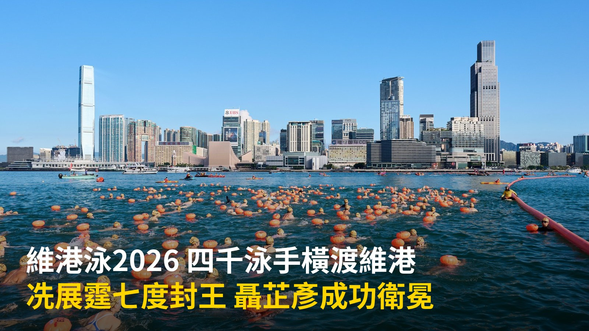
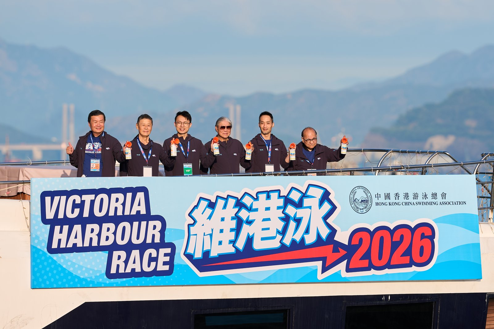
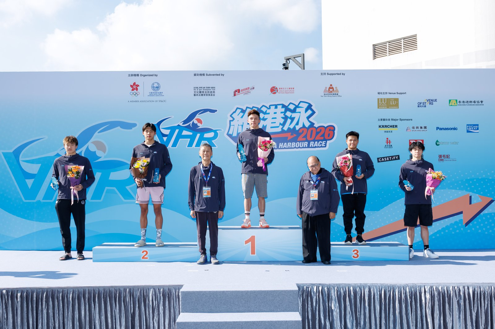
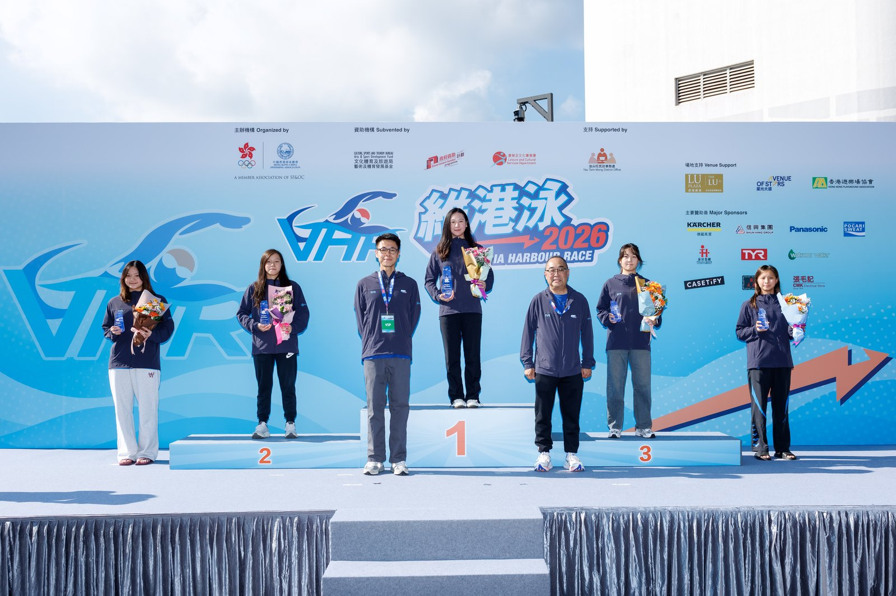
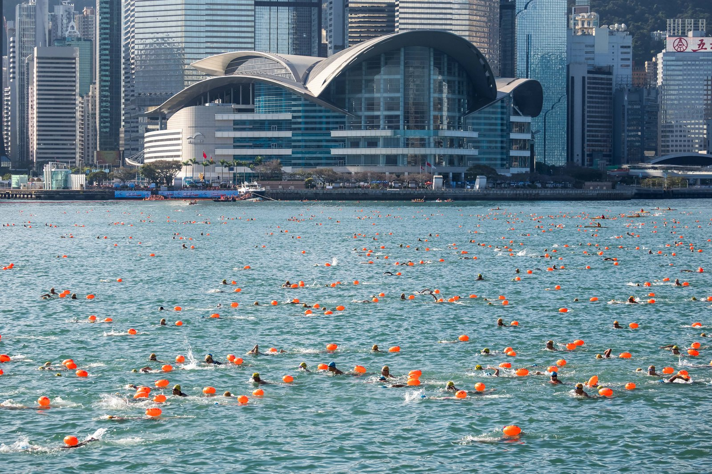
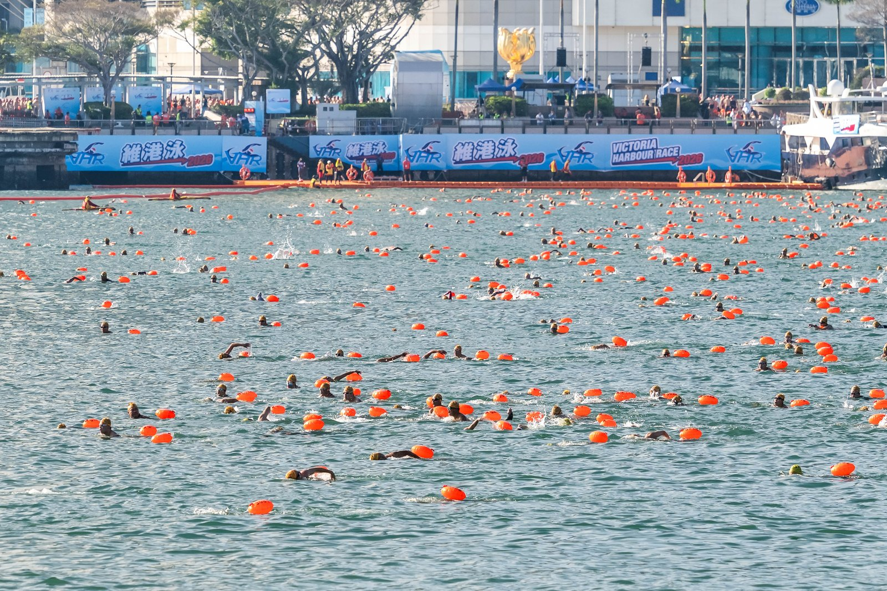
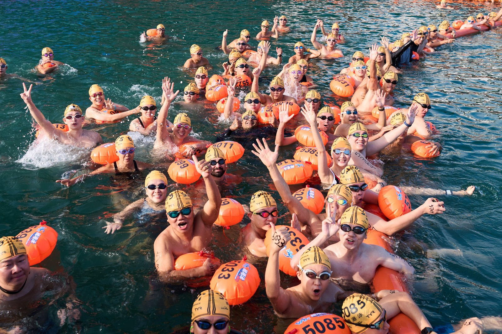
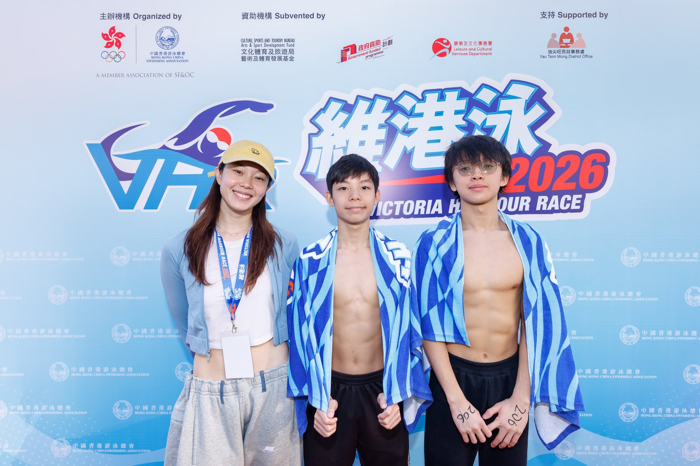

泳手橫渡維港，背後為尖沙咀及九龍半島天際線
swimming2026-11-15 23:56 · 中國香港游泳總會
維港泳2026 四千泳手橫渡維港 冼展霆第七度封王 聶芷彥成功衛冕
維港泳2026今早（11月15日）在維多利亞港舉行，近四千名本地及海外泳手由灣仔金紫荊廣場公眾碼頭出發，游往尖沙咀星光大道，全程約一公里，人數再創復辦以來新高。競賽組三百名頂尖泳手同場較量，冼展霆以15分35秒0第七度封王，葉丞軒（15分39秒5）及陳浚軒（15分42秒8）分列亞、季軍，蘇冠華（15分44秒7）與賴敬和（15分52秒3）分列第四、五名；女子組聶芷彥以16分55秒1成功衛冕，林倬如（16分59秒2）及林柏彤（16分59秒8）緊隨其後，梁穎溱（18分00秒1）與方鄯嘉（18分01秒9）分列第四、五名。由於賽事期間維港水流變急，大會基於安全考慮取消優悠組最後一組出發，泳總會長王敏超致歉，並承諾向受影響參加者全數退款。






